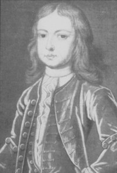
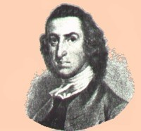

by
Stefan Bielinski
 William Livingston was born in Albany in 1723. He was the eighth of the thirteen children born to Philip Livingston and his wife Catharina Van Brugh Livingston. He grew up in his father's landmark Albany house and at the family estate called Livingston Manor - which his father inherited in 1728.
William spent much of his youth in the care of his grandmother, Albany resident Sara Cuyler Van Brugh. A younger son of one of the wealthiest men in colonial Albany, this young teen also spent a year as a missionary among the Mohawks at Fort Hunter under the tutelage of one-time Albany neighbor Reverend Henry Barclay.
At age thirteen, William followed his brothers to New Haven and graduated from Yale University in 1741. Livingston maintained his Yale connection for many years.
But after graduation, he went home to Albany. A brief commercial apprenticeship ruled out business as a career path. Philip Livingston then chose a legal career for his youngest son. Over the next years, he studied law under eminent Manhattan jurist James Alexander. The clerkship was a failure. Experiencing great difficulty applying himself in the New York City setting, William Livingston again returned home. Sent back to New York to clerk under William Smith, after two years, he was admitted to the New York bar.
By that time, he had begun to gain some repute as a political essayist. He established a legal practice in New York City. During the 1750s and 60s, he represented Albany's legal interests in New York. In 1745, he married Susannah French and lived on Manhattan.
After 1770, he moved his legal practice to New Jersey and built a large home at Elizabeth. He served in the Second Continental Congress, commanded the New Jersey militia, and was elected governor of New Jersey in 1776. He held that office for the remainder of his life.
William Livingston died at his estate in Elizabethtown, New Jersey in 1790 and was buried there.

notes
 Sources: The life of William Livingston focusing on his childhood
and on his relationship with the city of Albany is CAP biography
number 5033. This profile is derived chiefly from family
and community-based resources. The most outstanding
source on his life is Milton M. Klein, The American Whig: William Livingston
of New York (New York, 1993), a revised edition of the author's 1954
doctoral dissertation. A chapter entitled "The Early Years" provides an
unparalleled, personal look at his youth! See pages 31-56. A large number
of Internet biographies
present a variety
of perspectives.
Sources: The life of William Livingston focusing on his childhood
and on his relationship with the city of Albany is CAP biography
number 5033. This profile is derived chiefly from family
and community-based resources. The most outstanding
source on his life is Milton M. Klein, The American Whig: William Livingston
of New York (New York, 1993), a revised edition of the author's 1954
doctoral dissertation. A chapter entitled "The Early Years" provides an
unparalleled, personal look at his youth! See pages 31-56. A large number
of Internet biographies
present a variety
of perspectives.
first posted: 8/20/02